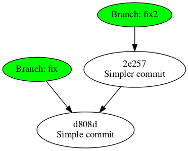
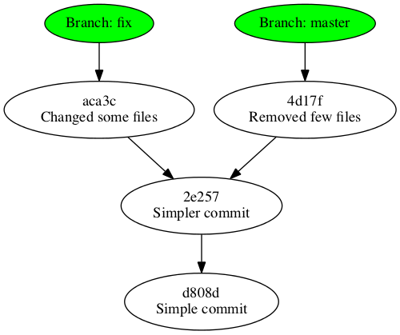

GIT introduction
Created by Mikhail Vnukov
Heads Up
Git is a distributed version control and source code management (SCM) system width an emphasis on speed.
Vertical Slides
Slides can be nested inside of other slides, try pressing down.
Basement Level 1
Press down or up to navigate.
Basement Level 2
Cornify

Pretty log
git config --global alias.lg "log --color --graph --pretty=format:
'%Cred%h%Creset -%C(yellow)%d%Creset %s %Cgreen(%cr) %C(bold blue)<%an>
%Creset‘ −−abbrev-commit"
* dd20480 - (HEAD, rightReduce) Right reduce (4 months ago) <Mikhail Vnukov>
* 9240e3e - (origin/threads, threads) Initial thread api (4 months ago) <Mikhail Vnukov>
* a3d7294 - (master) Merge pull request #2 from alexogar/generate_$_feature (4 months ago) <Mikhail>
|\
| * 4e63749 - Generate main $ file from @IncludeInMain annotated static methods (4 months ago) <alexogar>
|/
* 8875951 - Some minor functions (4 months ago) <alexogar>
* ad4c3ef - Each with next, filter and find (4 months ago) <alexogar>
* 3bdee79 - Reduce with memo (4 months ago) <alexogar>
Gitignore
https://github.com/github/gitignore
Grab all suitable and put into your .gitignore files
Clone repo
HTTPS
$ git clone https://your.repo/path
To bypass password demand
Create _netrc file in your $HOME directory
machine <hostname> login <username> password <password>
Insecure! There are better ways
Clone repo
SSH
$ git clone ssh://your.repo/path
Follow your repo instructions on installing SSH keys
Under the hood
.git directory
HEAD config description hooks index info objects refs
[hh git-basics :) ]$ ls .git/objects/
02 15 25 35 41 50 62 6b 72 80 89 96 a3 af bc c8 de f4 fd
04 17 26 36 42 55 63 6c 73 82 8a 9a a6 b0 c0 ca e0 f6 ff
05 1d 29 3c 44 59 67 6e 77 84 90 9d a7 b6 c2 cc e1 f8 info
11 20 2d 3f 47 5a 68 6f 78 87 93 9e ad b8 c3 d0 e6 f9 pack
12 24 2e 40 49 5d 69 71 7e 88 95 9f ae b9 c4 d1 e9 fa
[hh git-basics :( ]$ ls .git/objects/3c/ cf65ae409bb502812244a3a4585ae32bc9fb7d

- config
- contains your project-specific configuration options
- description
- only used by the GitWeb program
- info
- keeps a global exclude file for ignored patterns that you don’t want to track in a .gitignore file
- hooks
- contains your client- or server-side hook scripts
- HEAD
- points to the branch you currently have checked out
- index
- is where Git stores your staging area information
- objects
- stores all the content for your database
- refs
- stores pointers into commit objects in that data (branches)
Objects
[hh reveal.js :) ]$ git lg
* 774b933 - (HEAD, master) First steps (16 minutes ago) <Mikhail Vnukov>
* 8831469 - Initial (11 hours ago) <Mikhail Vnukov>
[hh reveal.js :) ]$ git cat-file -t 774b933
commit
[hh reveal.js :) ]$ git cat-file -p 774b933
tree 3ccf65ae409bb502812244a3a4585ae32bc9fb7d
parent 883146996813919dd3d8f35728d05e42fd070a62
author Mikhail Vnukov <mikhail.vnukov@gmail.com> 1372653800 +0400
committer Mikhail Vnukov <mikhail.vnukov@gmail.com> 1372653800 +0400
First steps
[hh reveal.js :) ]$ git cat-file -p 3ccf65ae409bb502812244a
100644 blob 9ffdbc7345be803854e777dd7183dbe76153ae47 .gitignore
100644 blob 2d6cd8f4f425afc2f026172851b172151b9f8f3e .travis.yml
100644 blob 892469a4e40641af1bf57d292a71e5c28b7373a7 Gruntfile.js
100644 blob e1e8bf7a8c29fe02e278aba9f7c5658e3b474590 LICENSE
100644 blob 96b7c0e966f4ffe7ad188b82d7ae9c5caaf42a06 README.md
040000 tree 6814ad1c3d2a3b8eb087d017a8c00a7c26c370cd css
100644 blob 02f8e62584213205a025a0ebfeaf20eca0dbcf92 index.html
040000 tree f6ddefee310758a129784ff5d68e1c7085041538 js
040000 tree a630c3d86f33c9b73712c74c2e8c602e5b884f3c lib
100644 blob c2e6d3da8f7d84db93aae4daca467f9b34eb3b2f package.json
040000 tree 0595ca9d9b4cd568541583bf15c3b595ddc43779 plugin
100644 blob bc6197e3dc1e19ec90ae353d142b177e37a89864 reveal.sublime-project
040000 tree b9c5bb7ed230640cdf846c30b06c23c692f24d44 test

Branches
[hh git-basics :) ]$ ls .git/refs
heads remotes tags
heads = branches
[hh git-basics :) ]$ ls .git/refs/heads/
gh-pages master
[hh git-basics :) ]$ git branch
* gh-pages
master
remotes = remote branches
[hh git-basics :) ]$ ls .git/refs/remotes/origin/
gh-pages
[hh git-basics :( ]$ git branch -a
* gh-pages
master
remotes/origin/gh-pages
HEAD = current branch
[hh git-basics :) ]$ cat .git/HEAD
ref: refs/heads/gh-pages
Abstractions
Branches
Branches are just references to commits.
[hh git-basics :) ]$ git checkout -b part2

[hh git-basics :) ]$ git checkout -b abstractions
[hh git-basics :) ]$ git commit -am "Started abstractions chapter"

[hh git-basics :) ]$ git checkout part2
[hh git-basics :) ]$ git commit -am "Added funny image to the chapter2"
Remote branches
Remote branches are references to the state of branches on your remote repositories. They’re local branches that you can’t move
[hh git-basics :) ]$ git push origin gh-pages
[hh git-basics2 :) ]$ git fetch
[hh git-basics2 :) ]$ git checkout gh-pages
[hh git-basics2 :) ]$ git merge
Branching
Create branch
$ git branch iss53
$ git checkout iss53
$ git checkout -b iss53
Remove branch
$ git branch -d iss53
Remote branches
Create
$ git push origin serverfix
or
$ git push origin serverfix:serverfix
Remove
$ git push origin :serverfix
Merge
Fast-forward

[hh test :) ]$ git checkout fix
Switched to branch 'fix'
[hh test :) ]$ git merge fix2
Updating d808d3c..2e257a5
Fast-forward
file2 | 0
Three-way merging

[hh test :) ]$ git checkout master
Switched to branch 'master'
[hh test :) ]$ git merge fix
CONFLICT (modify/delete): tmp.dot deleted in HEAD and modified in fix. Version fix of tmp.dot left in tree.
CONFLICT (modify/delete): out.png deleted in HEAD and modified in fix. Version fix of out.png left in tree.
Automatic merge failed; fix conflicts and then commit the result.
[hh test :) ]$ git mergetool
Merging:
out.png
tmp.dot
Deleted merge conflict for 'out.png':
{local}: deleted
{remote}: modified file
Use (m)odified or (d)eleted file, or (a)bort? m
Deleted merge conflict for 'tmp.dot':
{local}: deleted
{remote}: modified file
Use (m)odified or (d)eleted file, or (a)bort? m
[hh test :) ]$ git status
# On branch master
# All conflicts fixed but you are still merging.
# (use "git commit" to conclude merge)
#
# Changes to be committed:
#
# new file: out.png
# new file: tmp.dot
#
[hh test :) ]$ git commit
[master 022112e] Merge branch 'fix'
Rebase
tough on grease, but soft on history
[hh test :) ]$ git checkout branch1
Switched to branch 'branch1'
[hh test :) ]$ git rebase master
First, rewinding head to replay your work on top of it...
Applying: Second commit
Applying: Third commit
[hh test :) ]$ git checkout master
Switched to branch 'master'
[hh test :) ]$ git merge
fatal: No commit specified and merge.defaultToUpstream not set.
[hh test :( ]$ git merge branch1
Updating 5a467b4..cb50365
Fast-forward
file2 | 1 +
1 file changed, 1 insertion(+)
create mode 100644 file2
Do not rebase commits that you have pushed to a public repository
Git workflow

Short work
git checkout -b private_feature_branch
touch file1.txt
git add file1.txt
git commit -am "WIP"
git checkout master
git merge --squash private_feature_branch
git commit -v
git push
git branch -d private_feature_branch
Long work
git checkout -b private_feature_branch
touch file1.txt
git add file1.txt
git commit -am "WIP"
...
git commit -am "WIP"
..
git commit -am "WIP"
git rebase --interactive master
Troubleshooting
Undoing things
Changing last commit
$ git commit --amend
$ git commit -m 'initial commit'
$ git add forgotten_file
$ git commit --amend
Unstaging a Staged File
$ git add .
$ git status
# On branch master
# Changes to be committed:
# (use "git reset HEAD <file>..." to unstage)
#
# modified: README.txt
# modified: benchmarks.rb
#
$ git reset HEAD benchmarks.rb
benchmarks.rb: locally modified
$ git status
# On branch master
# Changes to be committed:
# (use "git reset HEAD <file>..." to unstage)
#
# modified: README.txt
#
# Changes not staged for commit:
# (use "git add <file>..." to update what will be committed)
# (use "git checkout -- <file>..." to discard changes in working directory)
#
# modified: benchmarks.rb
#
Unmodifying a Modified File
# Changes not staged for commit:
# (use "git add <file>..." to update what will be committed)
# (use "git checkout -- <file>..." to discard changes in working directory)
#
# modified: benchmarks.rb
#
$ git checkout -- benchmarks.rb
$ git status
# On branch master
# Changes to be committed:
# (use "git reset HEAD <file>..." to unstage)
#
# modified: README.txt
#
But sometimes we need to UNDO something
Remove commit in history
[hh test :) ]$ git lg
* f246686 - (HEAD, master) commit4 (5 seconds ago) <Mikhail Vnukov>
* 12d18ef - commit3 (16 seconds ago) <Mikhail Vnukov>
* c82f557 - commit2 (30 seconds ago) <Mikhail Vnukov>
* 8cc0647 - commit1 (40 seconds ago) <Mikhail Vnukov>
We are going to remove commit2 - c82f557
[hh test :) ]$ git rebase -i HEAD~3
Successfully rebased and updated refs/heads/master.
pick c82f557 commit2
pick 12d18ef commit3
pick f246686 commit4
# Rebase 8cc0647..f246686 onto 8cc0647
#
# Commands:
# p, pick = use commit
# r, reword = use commit, but edit the commit message
# e, edit = use commit, but stop for amending
# s, squash = use commit, but meld into previous commit
# f, fixup = like "squash", but discard this commit's log message
# x, exec = run command (the rest of the line) using shell
#
# These lines can be re-ordered; they are executed from top to bottom.
#
# If you remove a line here THAT COMMIT WILL BE LOST.
#
# However, if you remove everything, the rebase will be aborted.
#
# Note that empty commits are commented out